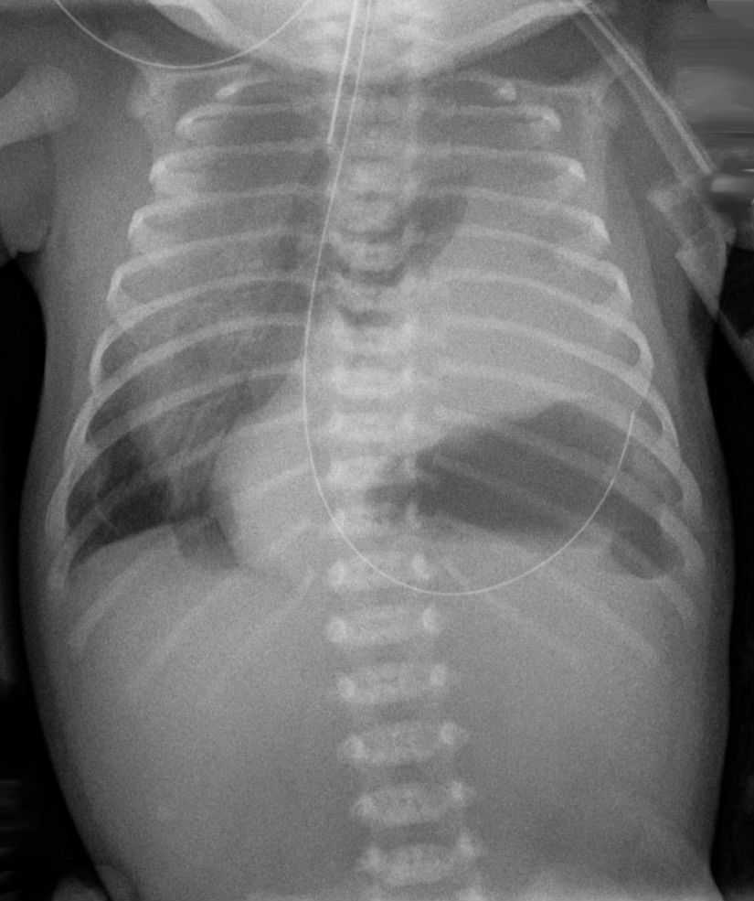

Ficha del catálogo
Hernia diafragmática congénita
- Sistema
- Respiratorio
- Modalidad
- RX
- Región
- Tórax neonatal
- Dificultad
- Intermedio
Defecto en el desarrollo del diafragma que permite el paso de vísceras abdominales al tórax, con hipoplasia pulmonar secundaria. La forma posterolateral izquierda es la más frecuente y suele diagnosticarse en el periodo prenatal o al nacer, con dificultad respiratoria grave. El grado de hipoplasia pulmonar determina el pronóstico.
Técnica
Radiografía de tórax y abdomen del recién nacido en proyección anteroposterior, valorando siempre el trayecto de la sonda nasogástrica.
Qué observar
- Imágenes aéreas de asas intestinales dentro del hemitórax
- Desplazamiento del mediastino hacia el lado contrario
- Ausencia de la línea diafragmática normal en el lado afectado
- Escaso gas intestinal en el abdomen, que aparece excavado
- Trayecto anómalo de la sonda nasogástrica hacia el tórax si el estómago está herniado
- Signos de hipoplasia del pulmón del lado afectado
Hallazgos
Contenido intestinal en el hemitórax con desplazamiento mediastínico contralateral, pérdida del contorno diafragmático y abdomen con poco gas.
Perlas
El recorrido de la sonda nasogástrica es la pista más rápida y fiable: Si asciende hacia el tórax, el estómago está herniado. Este dato también evita confundir la hernia con una malformación quística pulmonar.
Diagnóstico diferencial
- Malformación congénita de la vía aérea pulmonar
- Quistes dentro del pulmón con diafragma íntegro y gas abdominal normal.
- Eventración diafragmática
- Diafragma elevado pero continuo con vísceras por debajo.
- Neumotórax a tensión
- Hemitórax hiperclaro sin estructuras intestinales.
Simuladores
- Enfisema lobar congénito
- Quiste broncogénico grande
- Atelectasia con hiperinsuflación compensadora
Por modalidad
- RX
- Diagnóstico inicial en el neonato
- US
- Diagnóstico prenatal y valoración del contenido herniado
- RM
- Estimación prenatal del volumen pulmonar
Protocolo
Radiografía anteroposterior de tórax y abdomen incluyendo el trayecto completo de la sonda nasogástrica.
Clasificación
Se describen por su localización, siendo la posterolateral la más frecuente y la retroesternal anterior mucho menos común.
Errores frecuentes
- Confundir asas intestinales torácicas con lesiones quísticas pulmonares
- Colocar un drenaje torácico creyendo que se trata de un neumotórax
- No valorar el trayecto de la sonda nasogástrica

hernia diafragmatica neonato hipoplasia pulmonar sonda nasogastrica malformacion bochdalek